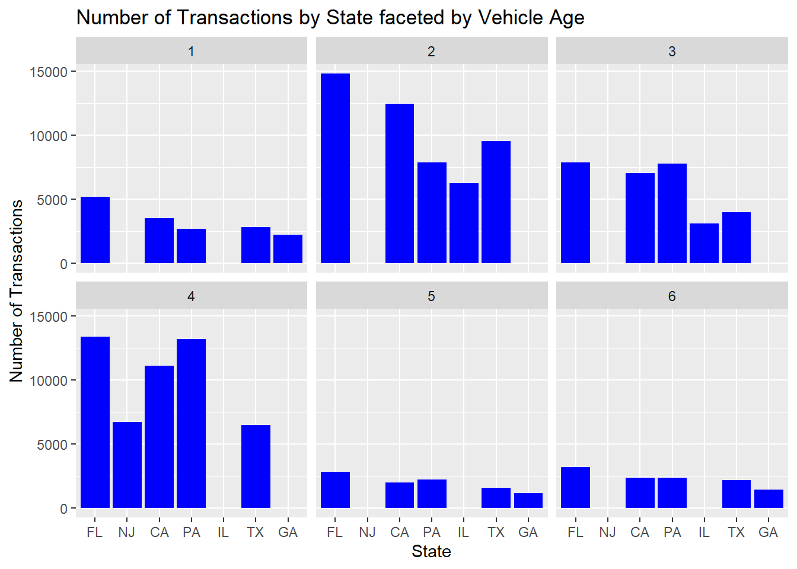

Error in library(vindecodr): there is no package called 'vindecodr'
Code
library(plotrix)library(sparklyr)
Error in library(sparklyr): there is no package called 'sparklyr'
Code
library(purrr)knitr::opts_chunk$set(echo =TRUE)
Instructions
The emphasis in this homework is on exploratory data analysis using both graphics and statistics. You should build on your prior homework - incorporating any feedback and adjusting the code and text as needed. These homeworks are intended to be cumulative. Therefore, while it is fine to switch datasets, you will need to include all of the information from HW1 for your new (or old) dataset in this hw submission as well.
Include descriptive statistics (e.g, mean, median, and standard deviation for numerical variables, and frequencies and/or mode for categorical variables
Include relevant visualizations using ggplot2 to complement these descriptive statistics. Be sure to use faceting, coloring, and titles as needed. Each visualization should be accompanied by descriptive text that highlights:
the variable(s) used
what questions might be answered with the visualizations
what conclusions you can draw
Use group_by() and summarise() to compute descriptive stats and/or visualizations for any relevant groupings. For example, if you were interested in how average income varies by state, you might compute mean income for all states combined, and then compare this to the range and distribution of mean income for each individual state in the US.
Identify limitations of your visualization, such as:
What questions are left unanswered with your visualizations
What about the visualizations may be unclear to a naive viewer
How could you improve the visualizations for the final project
This data set contains historical used vehicle auction prices that took place between 1982 and 2015.
First, lets take a look at the variables in the data set.
Code
summary(carprices)
year make model trim
Length:558837 Length:558837 Length:558837 Length:558837
Class :character Class :character Class :character Class :character
Mode :character Mode :character Mode :character Mode :character
body transmission vin state
Length:558837 Length:558837 Length:558837 Length:558837
Class :character Class :character Class :character Class :character
Mode :character Mode :character Mode :character Mode :character
condition odometer color interior
Min. :1.000 Min. : 1 Length:558837 Length:558837
1st Qu.:2.700 1st Qu.: 28371 Class :character Class :character
Median :3.600 Median : 52254 Mode :character Mode :character
Mean :3.425 Mean : 68320
3rd Qu.:4.200 3rd Qu.: 99109
Max. :5.000 Max. :999999
NA's :11820 NA's :94
seller mmr sellingprice saledate
Length:558837 Min. : 25 Min. : 1 Length:558837
Class :character 1st Qu.: 7100 1st Qu.: 6900 Class :character
Mode :character Median : 12250 Median : 12100 Mode :character
Mean : 13769 Mean : 13611
3rd Qu.: 18300 3rd Qu.: 18200
Max. :182000 Max. :230000
NA's :26
## Cleaning the Data
I’ve noticed a few records belonging to Canadian provinces. “ab” is Alberta, “on” is Ontario, “qc” is Quebec & “ns” represents Nova Scotia.
Code
#Observing the amount of NAs in our most important variables# carprices %>% # filter(is.na(model), is.na(make)) %>% # dim()#Justify dropping NAs... Why did i exclude itcarprices <- carprices %>%filter(!is.na(make), !is.na(model), !is.na(odometer), !is.na(mmr)) #dfSummary(carprices)#Observing all records for model year 2007 and newercarprices<- carprices %>%filter(`year`>2006, sellingprice>100, condition>2.41)dim(carprices)
[1] 388155 16
Code
#Checking the consistency in the names of states and body types carprices %>%select(state) %>%distinct()
# A tibble: 38 × 1
state
<chr>
1 ca
2 tx
3 pa
4 mn
5 az
6 tn
7 md
8 ne
9 oh
10 fl
# … with 28 more rows
# A tibble: 83 × 1
body
<chr>
1 SUV
2 Sedan
3 Convertible
4 Wagon
5 Coupe
6 Crew Cab
7 G Coupe
8 G Sedan
9 Hatchback
10 Elantra Coupe
# … with 73 more rows
Code
carprices$body <-toupper(carprices$body)
I notice that there are 76 distinct values for body. I’ll explore and condense them into fewer categories in a new column called “Body_type” below
Code
#Checking the consistency in the names of Body types}carprices %>%select(body) %>%distinct()
# A tibble: 43 × 1
body
<chr>
1 SUV
2 SEDAN
3 CONVERTIBLE
4 WAGON
5 COUPE
6 CREW CAB
7 G COUPE
8 G SEDAN
9 HATCHBACK
10 ELANTRA COUPE
# … with 33 more rows
Code
#Creating a Body Type columncarprices <-mutate(carprices, Body_Type =case_when(str_detect(body, "EDAN")~"Sedan", str_detect(body, "SUV") ~"SUV", str_detect(body, "AB") ~"Pickup", str_detect(body, "OUP")~"Coupe", str_detect(`body`, "VAN")~"Minivan", str_detect(`body`,"ONV")~"Convertible", str_detect(`body`,"AGO") ~"Wagon", str_detect(`body`,"ATCH")~"Hatchback", str_detect(`body`,"CREW")~"Pickup" ))# print(head(carprices))count(carprices)
# A tibble: 1 × 1
n
<int>
1 388155
Next step is to link multiple files to get the MSRP from a historical catalog. We’ll need this in order to get AV/MSRP ratios.
Code
#Creating a Key in the CDN catalogca_catalog <- ca_catalog %>%mutate(YearOfLaunch=`Model Year`-1)#Creating Catalog with MSRP in CADca_catalog <- ca_catalog %>%group_by(`Combined`, `YearOfLaunch`, `Segment` ) %>%summarise( Trim_Count=n(), AVG_MSRP_CAD=mean(`MSRP`, na.rm=TRUE), MSRP_Range_CAD= (max(`MSRP`)-min(`MSRP`)), StdDev_MSRP_CAD=sd(`MSRP`, na.rm=FALSE), Error.MSRP_CAD=std.error(`MSRP`, na.rm=FALSE))%>%ungroup()
Code
#Joining the data to convert CAD MSRP to USD MSRP laterca_catalog <-left_join(ca_catalog, exchange_rate, c("YearOfLaunch"="Year"))#Creating US$ Catalog and Converting to MSRP from CAD to USDus_catalog <- ca_catalog %>%mutate(AVG_MSRP=round((`AVG_MSRP_CAD`/`Close`), digits =0), MSRP_Range=`MSRP_Range_CAD`/`Close`, StdDev_MSRP=`StdDev_MSRP_CAD`/`Close`, Error.MSRP=`Error.MSRP_CAD`/`Close` )#Finalizing US Catalog for Joiningus_catalog <- us_catalog %>%select(Combined, Segment, AVG_MSRP, MSRP_Range, Trim_Count, StdDev_MSRP, Error.MSRP) %>%mutate(`Error %`=round((`Error.MSRP`/`AVG_MSRP`*100), digits =1), `%MSRP_Range`=round((`MSRP_Range`/`AVG_MSRP`*100), digits=1))#Creating a common key to join carprices and us_catalogcarprices<- carprices %>%mutate(year2=year, make2=make, model2=model)carprices <- carprices %>%unite(`YMM`, `year2`, `make2`, `model2`, sep=" ")
Code
#Joining Data with us_catalog# carprices <- head(carprices) carprices <-left_join(carprices, us_catalog, c("YMM"="Combined" )) #saving our raw records beofre filteringraw_carprices <- carprices#Filtering out the keys that were not mapped (Run these false keys through a vin decoder to get exact matches)false_keys <- carprices %>%filter(is.na(AVG_MSRP))#Removing NAs in MSRP from main datasetcarprices <- carprices %>%filter(!is.na(AVG_MSRP)) #replace_na(carprices$StdDev_MSRP, 0)print(head(carprices))
# A tibble: 6 × 26
year make model trim body trans…¹ vin state condi…² odome…³ color
<chr> <chr> <chr> <chr> <chr> <chr> <chr> <chr> <dbl> <dbl> <chr>
1 2015 Kia Sorento LX SUV automa… 5xyk… CA 5 16639 white
2 2015 Kia Sorento LX SUV automa… 5xyk… CA 5 9393 white
3 2014 BMW 3 Series 328i SUL… SEDAN automa… wba3… CA 4.5 1331 gray
4 2015 Volvo S60 T5 SEDAN automa… yv16… CA 4.1 14282 white
5 2014 BMW M5 Base SEDAN automa… wbsf… CA 3.4 14943 black
6 2014 Audi A4 2.0T Pre… SEDAN automa… wauf… CA 4.2 9557 white
# … with 15 more variables: interior <chr>, seller <chr>, mmr <dbl>,
# sellingprice <dbl>, saledate <chr>, Body_Type <chr>, YMM <chr>,
# Segment <chr>, AVG_MSRP <dbl>, MSRP_Range <dbl>, Trim_Count <int>,
# StdDev_MSRP <dbl>, Error.MSRP <dbl>, `Error %` <dbl>, `%MSRP_Range` <dbl>,
# and abbreviated variable names ¹transmission, ²condition, ³odometer
Code
# To clean Year, make, Model fields in false_keys, Run Below VinIn <-false_keys %>%select(vin) VinIn <- VinIn$vindecode <-function(x) { VIN<-decode_vin(x)}decoded_keys <-map_dfr(VinIn, decode)#Saving the above output as a CSVwrite.csv(decoded_keys, "C:\\Users\\Owen-Matthew\\Documents\\Github\\601_Fall_2022\\posts\\decoded_keys.csv", row.names=FALSE)
Code
false_keys %>%select(vin) %>%distinct() %>%dim()
[1] 46123 1
Code
# #R Studio Desktop Read In# #Cleaning False keysaction_keys <-read_csv("decoded_keys.csv")# #R Studio Cloud Read In# #Cleaning False keys# action_keys <- read_csv("/cloud/project/Final_project/decoded_keys.csv")a_keys <- action_keysa_keys <- a_keys %>%filter(!is.na(year)) %>%filter(!is.na(make)) %>%filter(!is.na(model)) %>%filter(!is.na(VIN)) #Join with Cataloga_keys <- a_keys %>%select(model_year, make,model, VIN) %>%mutate(year= model_year, make2=make, model2=model) %>%unite (YMM, model_year, make2, model2, sep =" ")a_keys <-inner_join(a_keys, us_catalog, c("YMM"="Combined" )) #Checking to see if a vehicle was auctioned multiple times, to see if we need to include sale date as a matching keyunique_check <- a_keys %>%select(`VIN`) %>%distinct() %>%dim()
Code
#Selecting useful columns in false_keysfalse_keys <- false_keys %>%select(trim, body, Body_Type, transmission, vin, state , condition, odometer, color, interior,seller, mmr, sellingprice, saledate)#Join with false keys to get sale recordscleaned_keys=inner_join(a_keys, false_keys, c("VIN"="vin")) %>%select(1:26) %>%rename("vin"="VIN")#get column names & order from carpricescheck_cols <-colnames(carprices) %>%as.factor()#checking to see if the column order is the samecleaned_keys <- cleaned_keys[, check_cols]print(head(cleaned_keys))
# A tibble: 6 × 26
year make model trim body trans…¹ vin state condi…² odome…³ color
<dbl> <chr> <chr> <chr> <chr> <chr> <chr> <chr> <dbl> <dbl> <chr>
1 2013 INFINITI G37 G37 Sport G CO… automa… jn1c… CA 4.5 14716 white
2 2013 INFINITI G37 G37 Jour… G SE… automa… jn1c… CA 4.6 68 black
3 2013 INFINITI G37 G37 Jour… G SE… automa… jn1c… CA 4.5 24112 white
4 2013 INFINITI G37 G37 Sport G CO… automa… jn1c… CA 4.7 4859 black
5 2013 INFINITI G37 G37 Sport G CO… automa… jn1c… CA 4.5 21126 black
6 2013 INFINITI G37 G37 Jour… G SE… automa… jn1c… CA 4.2 26675 blue
# … with 15 more variables: interior <chr>, seller <chr>, mmr <dbl>,
# sellingprice <dbl>, saledate <chr>, Body_Type <chr>, YMM <chr>,
# Segment <chr>, AVG_MSRP <dbl>, MSRP_Range <dbl>, Trim_Count <int>,
# StdDev_MSRP <dbl>, Error.MSRP <dbl>, `Error %` <dbl>, `%MSRP_Range` <dbl>,
# and abbreviated variable names ¹transmission, ²condition, ³odometer
Code
print(head(carprices))
# A tibble: 6 × 26
year make model trim body trans…¹ vin state condi…² odome…³ color
<chr> <chr> <chr> <chr> <chr> <chr> <chr> <chr> <dbl> <dbl> <chr>
1 2015 Kia Sorento LX SUV automa… 5xyk… CA 5 16639 white
2 2015 Kia Sorento LX SUV automa… 5xyk… CA 5 9393 white
3 2014 BMW 3 Series 328i SUL… SEDAN automa… wba3… CA 4.5 1331 gray
4 2015 Volvo S60 T5 SEDAN automa… yv16… CA 4.1 14282 white
5 2014 BMW M5 Base SEDAN automa… wbsf… CA 3.4 14943 black
6 2014 Audi A4 2.0T Pre… SEDAN automa… wauf… CA 4.2 9557 white
# … with 15 more variables: interior <chr>, seller <chr>, mmr <dbl>,
# sellingprice <dbl>, saledate <chr>, Body_Type <chr>, YMM <chr>,
# Segment <chr>, AVG_MSRP <dbl>, MSRP_Range <dbl>, Trim_Count <int>,
# StdDev_MSRP <dbl>, Error.MSRP <dbl>, `Error %` <dbl>, `%MSRP_Range` <dbl>,
# and abbreviated variable names ¹transmission, ²condition, ³odometer
Code
#We managed to clean 30% of the previous NA records; 13632 of 46608 records
Code
#reorganize cleaned keys to rbind with carprices datacarprices <-rbind(carprices, cleaned_keys)dim(carprices)
[1] 367892 26
Code
#Checking for NA values in AVG_MSRP and YMM# carprices %>% # filter(is.na(AVG_MSRP)) %>% # print()# carprices %>% # filter(is.na(YMM)) %>%# print()#Removing na records in Error%carprices$`Error %`<- carprices$`Error %`%>%replace_na(0)carprices <- carprices %>%filter(`Error %`<7)#Removing 677 NA records for Bodytypena.body <- carprices %>%filter(is.na(Body_Type))carprices <- carprices %>%filter(!is.na(Body_Type))
•
Code
# Displaying the Canadian recordssuppressWarnings({ carprices %>%filter(state==c("AB", "ON", "QC", "NS")) # Excluding Canadian recordscarprices<-carprices %>%filter(state!=c("AB", "ON", "QC", "NS"))})
I’ll create a new variable called Launch_date. Since most vehicles of model year x are released in the fall of the the previous year, I’ll follow that logic and assume that for all makes.
Code
#Creating Launch Date Step 1carprices$year <-as.numeric(as.character(carprices$year))carprices<- carprices %>%mutate(launch_month="9", launch_day="1", launch_year= (`year`-1))#Creating Launch Date Step 2carprices <- carprices %>%mutate(launch_date=make_date(year=`launch_year`, month =`launch_month`, day=`launch_day`))#Converting saledate to a date variablecarprices <- carprices %>%separate(saledate, into=c("ddd", "sale_month", "sale_day", "sale_year", "sale_time", "GMT", "TMZ"), sep=" ") #Recoding the format of the sale monthcarprices <-mutate(carprices, sale_month2=recode(sale_month, `Jan`="1", `Feb`="2", `Mar`="3", `Apr`="4", `May`="5", `Jun`="6", `Jul`="7", `Aug`="8", `Sep`="9", `Oct`="10", `Nov`="11", `Dec`="12" ))#Creating Date_Sold#carprices <- mutate(carprices, sale_year2=sale_year)carprices <-mutate(carprices, sale_year2=sale_year, Date_Sold =make_date(year=sale_year2, month = sale_month2, day = sale_day))# Tidyiing up: selecting important columnscarprices <- carprices %>%select(year, make, model, trim, transmission, Body_Type, state, condition, odometer, color, mmr, sellingprice, sale_year, launch_date, Date_Sold, AVG_MSRP, Trim_Count, `Error %`, `%MSRP_Range`, Segment ) #print(head(carprices))
Calculating the age of the vehicle at the time of sale:
Code
#Age of vehiclecarprices <-mutate(carprices, Age_months=round(as.numeric(difftime(Date_Sold, launch_date, units="days"))/30))#Checking for negatives in Vehicle Agecarprices %>%select(Age_months) %>%filter(Age_months<0)# %>%
#print.difftime()#Recoding Vehicle Agecarprices<-carprices %>%mutate(Age_months=recode(Age_months, `-8`=0))#Creating Age in yearscarprices<-carprices %>%mutate(Age_years=round(Age_months/12, 0))print(head(carprices))
# A tibble: 6 × 22
year make model trim trans…¹ Body_…² state condi…³ odome…⁴ color mmr
<dbl> <chr> <chr> <chr> <chr> <chr> <chr> <dbl> <dbl> <chr> <dbl>
1 2015 Kia Sorento LX automa… SUV CA 5 16639 white 20500
2 2015 Kia Sorento LX automa… SUV CA 5 9393 white 20800
3 2014 BMW 3 Series 328i S… automa… Sedan CA 4.5 1331 gray 31900
4 2015 Volvo S60 T5 automa… Sedan CA 4.1 14282 white 27500
5 2014 BMW M5 Base automa… Sedan CA 3.4 14943 black 69000
6 2014 Audi A4 2.0T P… automa… Sedan CA 4.2 9557 white 32100
# … with 11 more variables: sellingprice <dbl>, sale_year <chr>,
# launch_date <date>, Date_Sold <date>, AVG_MSRP <dbl>, Trim_Count <int>,
# `Error %` <dbl>, `%MSRP_Range` <dbl>, Segment <chr>, Age_months <dbl>,
# Age_years <dbl>, and abbreviated variable names ¹transmission, ²Body_Type,
# ³condition, ⁴odometer
# A tibble: 6 × 23
year make model trim trans…¹ Body_…² state condi…³ odome…⁴ color mmr
<dbl> <chr> <chr> <chr> <chr> <chr> <chr> <dbl> <dbl> <chr> <dbl>
1 2015 Kia Sorento LX automa… SUV CA 5 16639 white 20500
2 2015 Kia Sorento LX automa… SUV CA 5 9393 white 20800
3 2014 BMW 3 Series 328i S… automa… Sedan CA 4.5 1331 gray 31900
4 2015 Volvo S60 T5 automa… Sedan CA 4.1 14282 white 27500
5 2014 BMW M5 Base automa… Sedan CA 3.4 14943 black 69000
6 2014 Audi A4 2.0T P… automa… Sedan CA 4.2 9557 white 32100
# … with 12 more variables: sellingprice <dbl>, sale_year <chr>,
# launch_date <date>, Date_Sold <date>, AVG_MSRP <dbl>, Trim_Count <int>,
# `Error %` <dbl>, `%MSRP_Range` <dbl>, Segment <chr>, Age_months <dbl>,
# Age_years <dbl>, RV_percent <dbl>, and abbreviated variable names
# ¹transmission, ²Body_Type, ³condition, ⁴odometer
Code
#How does the distriburion of RV% look?summary(carprices$RV_percent)
Min. 1st Qu. Median Mean 3rd Qu. Max.
0.90 37.00 47.20 47.98 58.40 124.70
Narrative about the data set..
This data set contains historical used vehicle auction prices that took place between 1982 and 2015. The data was collected from all Manheim auction houses across the 34 states in the USA. Each observation details a wholesale auction transaction that includes: the vehicle information, state, selling price and the market average price i.e the Manheim Market Report price (MMR) and other specifics about the sale.
`geom_smooth()` using method = 'gam' and formula = 'y ~ s(x, bs = "cs")'
Warning: The following aesthetics were dropped during statistical transformation: colour
ℹ This can happen when ggplot fails to infer the correct grouping structure in
the data.
ℹ Did you forget to specify a `group` aesthetic or to convert a numerical
variable into a factor?
Warning in make == c(mainstream, luxury): longer object length is not a multiple
of shorter object length
Warning in Body_Type == c(passenger): longer object length is not a multiple of
shorter object length
Code
ggplot(data = plot2) +aes(x =condition, y = (RV_percent)) +geom_smooth()
`geom_smooth()` using method = 'gam' and formula = 'y ~ s(x, bs = "cs")'
How does the transaction volume vary by age across volume states
Code
#Analyzing the number of transactions by state by the age vol.states<- carprices %>%filter(Age_years <7, Age_years >0) %>%group_by(Age_years, state) %>%tally() %>%arrange(desc(n)) %>%slice(1:5)vol.states %>%ggplot()+aes(x=reorder(state, -n), y= n) +geom_bar(stat ="identity", fill="blue") +labs(x="State", y="Number of Transactions") +facet_wrap(vars(Age_years))+ggtitle("Number of Transactions by State faceted by Vehicle Age")

From the above, we see that most vehicles are auctioned between ages 2 and 4 years. This corresponds to the popular lease terms of 24 to 48 months.
#Removing a few missing fields in Segments that were missing in CatalogBVS <- best_value_segments %>%filter(!is.na(Segment)) # ggplot(data = BVS) + # geom_point(mapping = aes(x = Age_years, y = RV_percent, color = `Segment`)) +# geom_smooth(mapping = aes(x = Age_years, y = RV_percent, color = `Segment`), se= F)BVS %>%ggplot() +aes(x = Age_years, y =(RV_percent)) +geom_bar(stat="identity", fill="darkred") +facet_wrap(~Segment)
# A tibble: 10 × 2
make n
<chr> <int>
1 Ford 65459
2 Nissan 35946
3 Chevrolet 32329
4 Toyota 23732
5 Dodge 21475
6 Hyundai 15149
7 Honda 13749
8 Kia 13547
9 INFINITI 12451
10 BMW 11348
---title: "Homework 3"author: "Owen Tibby"desription: "Homework 3"date: "11/30/2022"format: html: toc: true code-fold: true code-copy: true code-tools: truecategories: - HW3 - Used Vehicle Data - Owen Tibby---```{r}#| label: setup#| warning: falselibrary(tidyverse)library(tidyr)library(summarytools)library(dplyr)library(readr)library(readxl)library(stringr)library(lubridate)library(vindecodr)library(plotrix)library(sparklyr)library(purrr)knitr::opts_chunk$set(echo =TRUE)```## InstructionsThe emphasis in this homework is on exploratory data analysis using both graphics and statistics. You should build on your prior homework - incorporating any feedback and adjusting the code and text as needed. These homeworks are intended to be cumulative. Therefore, while it is fine to switch datasets, you will need to include all of the information from HW1 for your new (or old) dataset in this hw submission as well.- Include descriptive statistics (e.g, mean, median, and standard deviation for numerical variables, and frequencies and/or mode for categorical variables- Include relevant visualizations using ggplot2 to complement these descriptive statistics. Be sure to use faceting, coloring, and titles as needed. Each visualization should be accompanied by descriptive text that highlights:- the variable(s) used- what questions might be answered with the visualizations- what conclusions you can draw- Use group_by() and summarise() to compute descriptive stats and/or visualizations for any relevant groupings. For example, if you were interested in how average income varies by state, you might compute mean income for all states combined, and then compare this to the range and distribution of mean income for each individual state in the US.- Identify limitations of your visualization, such as:- What questions are left unanswered with your visualizations- What about the visualizations may be unclear to a naive viewer- How could you improve the visualizations for the final project## ## Reading in the Data```{r message=FALSE, warning=FALSE}# #RStudio Desktopcarprices <-read_csv("car_prices.csv", col_types =cols(mmr =col_number(), year =col_character(), sellingprice =col_number(), ...17 =col_skip()))ca_catalog <-read_csv("Catalog.csv", col_types =cols(Brand =col_skip(), ModelName =col_skip())) #, Trim = col_skip()))exchange_rate <-read_excel("HistoricalPrices.xlsx", col_types =c("numeric", "text", "skip", "skip", "skip", "numeric"))# # #RStudio Cloud# carprices <-read_csv("/cloud/project/Final_project/car_prices.csv",# col_types = cols(mmr = col_number(), year = col_character(), sellingprice = col_number(), ...17 = col_skip()))# ca_catalog <- read_csv("/cloud/project/Final_project/Catalog.csv", col_types = cols(Brand = col_skip(), ModelName = col_skip())) #, Trim = col_skip()))# exchange_rate <- read_excel("/cloud/project/Final_project/HistoricalPrices.xlsx", col_types = c("numeric", "text", "skip", "skip", "skip", "numeric"))```## Brief Description of the dataThis data set contains historical used vehicle auction prices that took place between 1982 and 2015.First, lets take a look at the variables in the data set.```{r message=FALSE, warning=FALSE}summary(carprices)``` ## Cleaning the DataI've noticed a few records belonging to Canadian provinces. "ab" is Alberta, "on" is Ontario, "qc" is Quebec & "ns" represents Nova Scotia.```{r}#Observing the amount of NAs in our most important variables# carprices %>% # filter(is.na(model), is.na(make)) %>% # dim()#Justify dropping NAs... Why did i exclude itcarprices <- carprices %>%filter(!is.na(make), !is.na(model), !is.na(odometer), !is.na(mmr)) #dfSummary(carprices)#Observing all records for model year 2007 and newercarprices<- carprices %>%filter(`year`>2006, sellingprice>100, condition>2.41)dim(carprices)``````{r}#Checking the consistency in the names of states and body types carprices %>%select(state) %>%distinct()carprices$state <-toupper(carprices$state)carprices %>%select(body) %>%distinct() %>%print()carprices$body <-toupper(carprices$body)```I notice that there are 76 distinct values for body. I'll explore and condense them into fewer categories in a new column called "Body_type" below```{r}#Checking the consistency in the names of Body types}carprices %>%select(body) %>%distinct()#Creating a Body Type columncarprices <-mutate(carprices, Body_Type =case_when(str_detect(body, "EDAN")~"Sedan", str_detect(body, "SUV") ~"SUV", str_detect(body, "AB") ~"Pickup", str_detect(body, "OUP")~"Coupe", str_detect(`body`, "VAN")~"Minivan", str_detect(`body`,"ONV")~"Convertible", str_detect(`body`,"AGO") ~"Wagon", str_detect(`body`,"ATCH")~"Hatchback", str_detect(`body`,"CREW")~"Pickup" ))# print(head(carprices))count(carprices)```Next step is to link multiple files to get the MSRP from a historical catalog. We'll need this in order to get AV/MSRP ratios.```{r message=FALSE, warning=FALSE}#Creating a Key in the CDN catalogca_catalog <- ca_catalog %>%mutate(YearOfLaunch=`Model Year`-1)#Creating Catalog with MSRP in CADca_catalog <- ca_catalog %>%group_by(`Combined`, `YearOfLaunch`, `Segment` ) %>%summarise( Trim_Count=n(), AVG_MSRP_CAD=mean(`MSRP`, na.rm=TRUE), MSRP_Range_CAD= (max(`MSRP`)-min(`MSRP`)), StdDev_MSRP_CAD=sd(`MSRP`, na.rm=FALSE), Error.MSRP_CAD=std.error(`MSRP`, na.rm=FALSE))%>%ungroup()``````{r}#Joining the data to convert CAD MSRP to USD MSRP laterca_catalog <-left_join(ca_catalog, exchange_rate, c("YearOfLaunch"="Year"))#Creating US$ Catalog and Converting to MSRP from CAD to USDus_catalog <- ca_catalog %>%mutate(AVG_MSRP=round((`AVG_MSRP_CAD`/`Close`), digits =0), MSRP_Range=`MSRP_Range_CAD`/`Close`, StdDev_MSRP=`StdDev_MSRP_CAD`/`Close`, Error.MSRP=`Error.MSRP_CAD`/`Close` )#Finalizing US Catalog for Joiningus_catalog <- us_catalog %>%select(Combined, Segment, AVG_MSRP, MSRP_Range, Trim_Count, StdDev_MSRP, Error.MSRP) %>%mutate(`Error %`=round((`Error.MSRP`/`AVG_MSRP`*100), digits =1), `%MSRP_Range`=round((`MSRP_Range`/`AVG_MSRP`*100), digits=1))#Creating a common key to join carprices and us_catalogcarprices<- carprices %>%mutate(year2=year, make2=make, model2=model)carprices <- carprices %>%unite(`YMM`, `year2`, `make2`, `model2`, sep=" ")``````{r}#Joining Data with us_catalog# carprices <- head(carprices) carprices <-left_join(carprices, us_catalog, c("YMM"="Combined" )) #saving our raw records beofre filteringraw_carprices <- carprices#Filtering out the keys that were not mapped (Run these false keys through a vin decoder to get exact matches)false_keys <- carprices %>%filter(is.na(AVG_MSRP))#Removing NAs in MSRP from main datasetcarprices <- carprices %>%filter(!is.na(AVG_MSRP)) #replace_na(carprices$StdDev_MSRP, 0)print(head(carprices))``````{r eval=FALSE }# To clean Year, make, Model fields in false_keys, Run Below VinIn <-false_keys %>%select(vin) VinIn <- VinIn$vindecode <-function(x) { VIN<-decode_vin(x)}decoded_keys <-map_dfr(VinIn, decode)#Saving the above output as a CSVwrite.csv(decoded_keys, "C:\\Users\\Owen-Matthew\\Documents\\Github\\601_Fall_2022\\posts\\decoded_keys.csv", row.names=FALSE)``````{r message=FALSE, warning=FALSE}false_keys %>%select(vin) %>%distinct() %>%dim()# #R Studio Desktop Read In# #Cleaning False keysaction_keys <-read_csv("decoded_keys.csv")# #R Studio Cloud Read In# #Cleaning False keys# action_keys <- read_csv("/cloud/project/Final_project/decoded_keys.csv")a_keys <- action_keysa_keys <- a_keys %>%filter(!is.na(year)) %>%filter(!is.na(make)) %>%filter(!is.na(model)) %>%filter(!is.na(VIN)) #Join with Cataloga_keys <- a_keys %>%select(model_year, make,model, VIN) %>%mutate(year= model_year, make2=make, model2=model) %>%unite (YMM, model_year, make2, model2, sep =" ")a_keys <-inner_join(a_keys, us_catalog, c("YMM"="Combined" )) #Checking to see if a vehicle was auctioned multiple times, to see if we need to include sale date as a matching keyunique_check <- a_keys %>%select(`VIN`) %>%distinct() %>%dim() ``````{r}#Selecting useful columns in false_keysfalse_keys <- false_keys %>%select(trim, body, Body_Type, transmission, vin, state , condition, odometer, color, interior,seller, mmr, sellingprice, saledate)#Join with false keys to get sale recordscleaned_keys=inner_join(a_keys, false_keys, c("VIN"="vin")) %>%select(1:26) %>%rename("vin"="VIN")#get column names & order from carpricescheck_cols <-colnames(carprices) %>%as.factor()#checking to see if the column order is the samecleaned_keys <- cleaned_keys[, check_cols]print(head(cleaned_keys))print(head(carprices))#We managed to clean 30% of the previous NA records; 13632 of 46608 records``````{r}#reorganize cleaned keys to rbind with carprices datacarprices <-rbind(carprices, cleaned_keys)dim(carprices)#Checking for NA values in AVG_MSRP and YMM# carprices %>% # filter(is.na(AVG_MSRP)) %>% # print()# carprices %>% # filter(is.na(YMM)) %>%# print()#Removing na records in Error%carprices$`Error %`<- carprices$`Error %`%>%replace_na(0)carprices <- carprices %>%filter(`Error %`<7)#Removing 677 NA records for Bodytypena.body <- carprices %>%filter(is.na(Body_Type))carprices <- carprices %>%filter(!is.na(Body_Type))```•```{r}# Displaying the Canadian recordssuppressWarnings({ carprices %>%filter(state==c("AB", "ON", "QC", "NS")) # Excluding Canadian recordscarprices<-carprices %>%filter(state!=c("AB", "ON", "QC", "NS"))})```I'll create a new variable called Launch_date. Since most vehicles of model year x are released in the fall of the the previous year, I'll follow that logic and assume that for all makes.```{r}#Creating Launch Date Step 1carprices$year <-as.numeric(as.character(carprices$year))carprices<- carprices %>%mutate(launch_month="9", launch_day="1", launch_year= (`year`-1))#Creating Launch Date Step 2carprices <- carprices %>%mutate(launch_date=make_date(year=`launch_year`, month =`launch_month`, day=`launch_day`))#Converting saledate to a date variablecarprices <- carprices %>%separate(saledate, into=c("ddd", "sale_month", "sale_day", "sale_year", "sale_time", "GMT", "TMZ"), sep=" ") #Recoding the format of the sale monthcarprices <-mutate(carprices, sale_month2=recode(sale_month, `Jan`="1", `Feb`="2", `Mar`="3", `Apr`="4", `May`="5", `Jun`="6", `Jul`="7", `Aug`="8", `Sep`="9", `Oct`="10", `Nov`="11", `Dec`="12" ))#Creating Date_Sold#carprices <- mutate(carprices, sale_year2=sale_year)carprices <-mutate(carprices, sale_year2=sale_year, Date_Sold =make_date(year=sale_year2, month = sale_month2, day = sale_day))# Tidyiing up: selecting important columnscarprices <- carprices %>%select(year, make, model, trim, transmission, Body_Type, state, condition, odometer, color, mmr, sellingprice, sale_year, launch_date, Date_Sold, AVG_MSRP, Trim_Count, `Error %`, `%MSRP_Range`, Segment ) #print(head(carprices))```Calculating the age of the vehicle at the time of sale:```{r}#Age of vehiclecarprices <-mutate(carprices, Age_months=round(as.numeric(difftime(Date_Sold, launch_date, units="days"))/30))#Checking for negatives in Vehicle Agecarprices %>%select(Age_months) %>%filter(Age_months<0)# %>% #print.difftime()#Recoding Vehicle Agecarprices<-carprices %>%mutate(Age_months=recode(Age_months, `-8`=0))#Creating Age in yearscarprices<-carprices %>%mutate(Age_years=round(Age_months/12, 0))print(head(carprices))``````{r Calculating Retained Value% }#Retained valuecarprices <- carprices %>%mutate(RV_percent=round(`sellingprice`/`AVG_MSRP`*100, digits =1))carprices <- carprices %>%filter(RV_percent <125)print(head(carprices))#How does the distriburion of RV% look?summary(carprices$RV_percent)```## Narrative about the data set..This data set contains historical used vehicle auction prices that took place between 1982 and 2015. The data was collected from all Manheim auction houses across the 34 states in the USA. Each observation details a wholesale auction transaction that includes: the vehicle information, state, selling price and the market average price i.e the Manheim Market Report price (MMR) and other specifics about the sale.## Potential Research Questions```{r}#Establishing vehicle groups#Error in Nissan recordsmainstream <-c("Toyota", "Honda", "Hyundai", "Nissan", "Hyundai", "Kia", "Mazda", "Subaru", "Volkswagen")luxury <-c("BMW", "Audi", "Mercedes Benz", "Porsche", "Lexus", "INFINITI", "Acura", "Genesis", "Volvo", "Cadillac", "Lincoln")passenger <-c("Sedan", "SUV", "Coupe", "Convertible", "Wagon", "Hatchback")Japanese4 <-c("Toyota", "Honda", "Nissan", "Mazda")Korean <-c("Kia", "Hyundai", "Genesis")German <-c("Audi", "BMW", "Mercedes Benz")```1. Is there a correlation between mileage, age and condition?```{r}plot2 <- carprices %>%filter(make==c(`mainstream`, `luxury`), Body_Type==c(passenger) )ggplot(data = plot2) +aes(x =condition , y = (odometer), color= Age_years) +geom_point(position ="jitter")+geom_smooth()```2. How does mileage affect vehicle sale price/ RV?```{r}plot2 <- carprices %>%filter(make==c(`mainstream`, `luxury`), Body_Type==c(passenger), RV_percent >15) %>%arrange(desc(RV_percent)) ggplot(data = plot2) +aes(y = RV_percent, x = (odometer)) +geom_point(position ="jitter")+geom_smooth()#Control for Age & condition```3. What is there a correlation between condition and Retained value?```{r}plot2 <- carprices %>%filter(make==c(`mainstream`, `luxury`), Body_Type==c(passenger) ) %>%group_by(Age_years)ggplot(data = plot2) +aes(x =condition, y = (RV_percent)) +geom_smooth()```4. How does the transaction volume vary by age across volume states```{r}#Analyzing the number of transactions by state by the age vol.states<- carprices %>%filter(Age_years <7, Age_years >0) %>%group_by(Age_years, state) %>%tally() %>%arrange(desc(n)) %>%slice(1:5)vol.states %>%ggplot()+aes(x=reorder(state, -n), y= n) +geom_bar(stat ="identity", fill="blue") +labs(x="State", y="Number of Transactions") +facet_wrap(vars(Age_years))+ggtitle("Number of Transactions by State faceted by Vehicle Age")```From the above, we see that most vehicles are auctioned between ages 2 and 4 years. This corresponds to the popular lease terms of 24 to 48 months.2. Which segment retains the best value?```{r message=FALSE, warning=FALSE}by_segment <- carprices %>%filter(Age_years <8, Age_years>0, !is.na(Segment), Body_Type== passenger, make==c(mainstream, luxury)) %>%group_by(Age_years, Segment, sale_year, Age_months) %>%summarise(Segment_RV=round(mean(RV_percent), digits=1)) %>%arrange(desc(Segment_RV)) %>%arrange((Age_years)) %>%arrange((sale_year)) %>%slice(1:5) print(head(by_segment))ggplot(data = by_segment) +geom_smooth(mapping =aes(x = Age_months, y = Segment_RV, color =`Segment`), se= F) #+# facet_wrap(~sale_year)``````{r}#Finding the Segments with the highest RVbest_value_segments <- carprices %>%filter(Age_years>1, Age_years <6, Body_Type== passenger, `Error %`<5, !is.na(Segment)) %>%group_by(Segment,Age_years, RV_percent, odometer, condition, model) %>%tally() %>%summarise(RV_percentage =mean(RV_percent), odometer=mean(odometer),condition=mean(condition), .groups ="keep") %>%tally() %>%summarise(Segment=Segment, Age_years= Age_years, RV_percent=mean(RV_percent), odometer=mean(odometer),condition=mean(condition), n =sum(n), .groups ="keep") %>%ungroup() %>%group_by(Segment, Age_years) %>%summarise(Segment=Segment, Age_years= Age_years, RV_percent=mean(RV_percent),Mileage=mean(odometer), Condition=mean(condition), Sample_Size =sum(n), .groups ="keep") %>%slice(1:1) %>%arrange(desc(RV_percent)) %>%arrange((Age_years))print(best_value_segments)#Removing a few missing fields in Segments that were missing in CatalogBVS <- best_value_segments %>%filter(!is.na(Segment)) # ggplot(data = BVS) + # geom_point(mapping = aes(x = Age_years, y = RV_percent, color = `Segment`)) +# geom_smooth(mapping = aes(x = Age_years, y = RV_percent, color = `Segment`), se= F)BVS %>%ggplot() +aes(x = Age_years, y =(RV_percent)) +geom_bar(stat="identity", fill="darkred") +facet_wrap(~Segment)``````{r}#Volume modelsvol.models<- carprices %>%filter( Age_years >0) %>%group_by(model) %>%tally() %>%arrange(desc(n)) %>%ungroup() %>%slice(1:10)vol.models.passenger <- carprices %>%filter(Age_years >0, Body_Type== passenger) %>%group_by(model) %>%tally() %>%arrange(desc(n)) %>%ungroup() %>%slice(1:10)popular.models <- vol.models.passenger$modelvol.models %>%ggplot()+aes(x=reorder(model, -n), y= n) +geom_bar(stat ="identity", fill="blue") +labs(x="Model", y="Number of Wholesale Transactions")+ggtitle("Top Selling Used Vehicles")vol.models.passenger %>%ggplot()+aes(x=reorder(model, -n), y= n) +geom_bar(stat ="identity", fill="blue") +labs(x="Model", y="Number of Transactions for Top Selling Models")```Do the most popular vehicles retain the best value or is it the opposite? Let's explore below:```{r}#Finding the models with the highest RVbest_value_models <- carprices %>%filter(Age_years>1, Age_years <6, Body_Type== passenger, `Error %`<5) %>%group_by(make, model,Age_years, RV_percent, odometer, condition, Segment) %>%tally() %>%summarise(RV_percentage =mean(RV_percent), odometer=mean(odometer), condition=mean(condition), .groups ="keep") %>%tally() %>%summarise(make=make, model=model, Age_years= Age_years, RV_percent=mean(RV_percent), odometer=mean(odometer),condition=mean(condition), n =sum(n), .groups ="keep") %>%ungroup() %>%group_by(make, model, Age_years) %>%summarise(make=make, model=model, Age_years= Age_years, RV_percent=mean(RV_percent), mileage=mean(odometer), condition=mean(condition), n =sum(n), .groups ="keep") %>%slice(1:1) %>%arrange(desc(RV_percent)) %>%#Filtering a sample size 20 or morefilter(n>19) %>%arrange((Age_years))print(best_value_models)```How does the RV% compare among volume models?```{r}# vol.models %>% # ggplot()+ aes(y= RV_percent , x=Age_months)```Popular makes```{r}#Distribution of makesvol.brands<- carprices %>%filter(Age_years <7, Age_years >0) %>%group_by(make) %>%tally() %>%arrange(desc(n)) %>%slice(1:10)print(vol.brands)vol.brands %>%ggplot()+aes(x=reorder(make, -n), y= n) +geom_bar(stat ="identity", fill="blue") +labs(x="Brand", y="Number of Transactions") +#facet_wrap(vars(Age_years))+ggtitle("Popular Brands")``````{r warning=FALSE}#Japanese makesplot <- carprices %>%filter(Age_years<7, make==c("Toyota", "Honda", "Nissan", "Hyundai"), Body_Type== ("Sedan"))ggplot(data = plot) +geom_smooth(mapping =aes(x = Age_months, y = RV_percent, color =`make`))```Best mainstream cars to buy post-2015?```{r warning=FALSE}carprices %>%filter(make== mainstream, Age_years ==2, `%MSRP_Range`<50, Body_Type== passenger) %>%group_by(model) %>%arrange(desc(RV_percent)) %>%slice(1:10)``````{r eval=FALSE}#Monthly mileage by stateplot7 <- carprices %>%filter(make==c(`mainstream`, `luxury`), Body_Type==c(passenger) )ggplot(data = plot7) +aes(x =state , y = ((odometer)/ Age_months)) +geom_histogram(stat ="identity") ```:::##